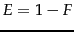

Definition and implementation of the notion of relevance to a query got off to a rocky start in 1953. Swanson (1988) reports that in an evaluation in that year between two teams, they agreed that 1390 documents were variously relevant to a set of 98 questions, but disagreed on a further 1577 documents, and the disagreements were never resolved.
Rigorous formal testing of IR systems was first completed in the Cranfield experiments, beginning in the late 1950s. A retrospective discussion of the Cranfield test collection and experimentation with it can be found in (Cleverdon, 1991). The other seminal series of early IR experiments were those on the SMART system by Gerard Salton and colleagues (Salton, 1971b;1991). The TREC evaluations are described in detail by Voorhees and Harman (2005). Online information is available at http://trec.nist.gov/. Initially, few researchers computed the statistical significance of their experimental results, but the IR community increasingly demands this (Hull, 1993). User studies of IR system effectiveness began more recently (Saracevic and Kantor, 1988;1996).
The notions of recall and precision were first used by Kent et al. (1955), although the term precision did not appear until later. The (or, rather its complement ) was introduced by van Rijsbergen (1979). He provides an extensive theoretical discussion, which shows how adopting a principle of decreasing marginal relevance (at some point a user will be unwilling to sacrifice a unit of precision for an added unit of recall) leads to the harmonic mean being the appropriate method for combining precision and recall (and hence to its adoption rather than the minimum or geometric mean).
Buckley and Voorhees (2000) compare several evaluation measures, including precision at  , MAP, and R-precision, and evaluate the error rate of each measure. was adopted as the official evaluation metric in the TREC HARD track (Allan, 2005). Aslam and Yilmaz (2005) examine its surprisingly close correlation to MAP, which had been noted in earlier studies (Buckley and Voorhees, 2000, Tague-Sutcliffe and Blustein, 1995). A standard program for evaluating IR systems which computes many measures of ranked retrieval effectiveness is Chris Buckley's
, MAP, and R-precision, and evaluate the error rate of each measure. was adopted as the official evaluation metric in the TREC HARD track (Allan, 2005). Aslam and Yilmaz (2005) examine its surprisingly close correlation to MAP, which had been noted in earlier studies (Buckley and Voorhees, 2000, Tague-Sutcliffe and Blustein, 1995). A standard program for evaluating IR systems which computes many measures of ranked retrieval effectiveness is Chris Buckley's trec_eval program used in the TREC evaluations. It can be downloaded from: http://trec.nist.gov/trec_eval/.
Kekäläinen and Järvelin (2002) argue for the superiority of graded relevance judgments when dealing with very large document collections, and Järvelin and Kekäläinen (2002) introduce cumulated gain-based methods for IR system evaluation in this context. Sakai (2007) does a study of the stability and sensitivity of evaluation measures based on graded relevance judgments from NTCIR tasks, and concludes that NDCG is best for evaluating document ranking.
Schamber et al. (1990) examine the concept of relevance, stressing its multidimensional and context-specific nature, but also arguing that it can be measured effectively. (Voorhees, 2000) is the standard article for examining variation in relevance judgments and their effects on retrieval system scores and ranking for the TREC Ad Hoc task. Voorhees concludes that although the numbers change, the rankings are quite stable. Hersh et al. (1994) present similar analysis for a medical IR collection. In contrast, Kekäläinen (2005) analyze some of the later TRECs, exploring a 4-way relevance judgment and the notion of cumulative gain, arguing that the relevance measure used does substantially affect system rankings. See also Harter (1998). Zobel (1998) studies whether the pooling method used by TREC to collect a subset of documents that will be evaluated for relevance is reliable and fair, and concludes that it is.
The and its use for language-related purposes is discussed by Carletta (1996). Many standard sources (e.g., Siegel and Castellan, 1988) present pooled calculation of the expected agreement, but Di Eugenio (2004) argue for preferring the unpooled agreement (though perhaps presenting multiple measures). For further discussion of alternative measures of agreement, which may in fact be better, see Lombard et al. (2002) and Krippendorff (2003).
Text summarization has been actively explored for many years. Modern work on sentence selection was initiated by Kupiec et al. (1995). More recent work includes (Barzilay and Elhadad, 1997) and (Jing, 2000), together with a broad selection of work appearing at the yearly DUC conferences and at other NLP venues. Tombros and Sanderson (1998) demonstrate the advantages of dynamic summaries in the IR context. Turpin et al. (2007) address how to generate snippets efficiently.
Clickthrough log analysis is studied in (Joachims, 2002b, Joachims et al., 2005).
In a series of papers, Hersh, Turpin and colleagues show how improvements in formal retrieval effectiveness, as evaluated in batch experiments, do not always translate into an improved system for users (Hersh et al., 2000b, Turpin and Hersh, 2002, Hersh et al., 2000a;2001, Turpin and Hersh, 2001).
User interfaces for IR and human factors such as models of human information seeking and usability testing are outside the scope of what we cover in this book. More information on these topics can be found in other textbooks, including (Baeza-Yates and Ribeiro-Neto, 1999, ch. 10) and (Korfhage, 1997), and collections focused on cognitive aspects (Spink and Cole, 2005).